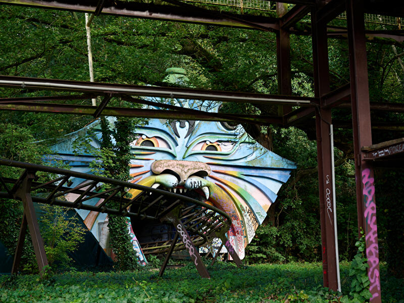

Top-Sehenswürdigkeiten in Berlin
Die Highlights unter den Sehenswürdigkeiten: Diese Attraktionen müssen Berlin-Besucher unbedingt gesehen haben.
Sehenswürdigkeiten nach Thema
Die wichtigsten Sehenswürdigkeiten Berlins sortiert nach Thema, wie Architektur, Parks, NS-Zeit und Gedenkstätten.

Alle Sehenswürdigkeiten
Berlins Sehenswürdigkeiten, Schlösser und Denkmäler mit Adresse, Informationen, Fotos und Verkehrsverbindung.

Öffentlicher Nahverkehr
Schnell und unkompliziert durch Berlin mit S-Bahn, U-Bahn, Bus und Tram. Informationen zum Berliner Nahverkehr
mit Fahrpreisen und Liniennetzen.

Sharing: E-Roller, Rad und Auto
Ob E-Scooter, Fahrrad, E-Roller oder Mietauto: Zahlreiche Anbieter in Berlin bieten Sharing unterschiedlicher
Verkehrsmittel an.

Berlin-Wetter
Das aktuelle Wetter in Berlin mit Vorhersagen, Regenradar, Unwetterwarnungen und weiteren Wetterdaten.

Dampferfahrten & Schiffstouren
Berlin vom Wasser aus entdecken: Schiffstouren durch die Innenstadt, ins Umland oder mit Party an Bord. Touren,
Anlegestellen, Tickets und

Stadtrundfahrten
Stadtrundfahrten mit dem Bus, Hop-on Hop-Hoff-Touren oder Bustouren in Kombination mit Schiffstouren.
Plus: Tipps zur selbst organisierten Stadtrundfahrt.

Stadtführungen
Stadtführungen und Touren mit Guide: Von Mitte bis Neukölln, von den Highlights bis in den Kiez - Berlin entdecken
für Besucher, Touristen und Schulklassen. mehr

Berlin für Abenteurer
Abenteuer in Berlin erleben: Ungewöhnliche Orte, Lost Places, neue Perspektiven und unvergessliche Erlebnisse.

Berlin für Romantiker
Berlin für Romantiker, Schwärmer, Himmelsstürmer, Phantasten, Träumer und Weltverbesserer: Ideen und Orte.

Alle Insidertipps
Insider-Tipps, ungewöhnliche Orte und neue Ideen für Berlin-Besucher abseits der ausgetretenen Pfade.

Zoos & Tierparks
Tiere aus aller Welt in Berlin: Zoos, Tierparks, Streichelzoos und öffentliche Tiergehege in Berlin.

Parks & Gärten
Gartenkultur in Vollendung oder Wiesen, Bäume und Blumen: In Berlins Parks und Gärten ist Platz für alles.

Spaziergänge & individuelle Touren
Spaziergänge, Touren und Rundgänge durch Berlin: Streifzüge für Flaneure in der Hauptstadt.